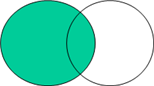

Chapter 10 Tidyverse 활용
공단자료와 필요 패키지 불러오기
load("claim.RData")
library(tidyverse)
library(lubridate) # 날짜 함수structured query language (sql)은 테이블에서 자료를 조회하고 자료를 입력, 수정, 삭제하며 테이블, 뷰, 인덱스를 생성, 삭제하는데 널리 사용되는 표준화된 언어이며, 데이터베이스를 관리하는데 유용하게 사용된다. R 패키지 “Tidyverse”는 sql의 기본기능을 이용하여 R에 맞는 함수로 작성하였으며, 따라서 이로 인해 데이터셋 관리의 편리함을 더하고 있다.
우리는 앞에서 이러한 구조의 명령어를 군데 군데 사용하여 그 사용법을 익혀왔으며, 이 장에서는 요약겸 새로운 기능을 익혀 자연스러움을 더하고자 한다.
10.1 Tidyverse (dplyr) 기본 구조
기본 구조는 다음과 같다.
새로운 데이터셋 <- 기존 데이터셋 %>%
filter() %>%
select() %>%
mutate() %>%
group_by() %>%
summarise() %>%
arrange()filter 구문은 데이터셋 구성시 필요한 조건을 지정하며, select 구문은 데이터셋에 선택하고자 하는 변수 혹은 새로 생성하려는 변수를 지정한다. mutate 구문은 새로운 변수 생성시 사용하며, group_by 문에는 그룹화된 데이터셋을 생성 시 그룹화할 기준 변수를 지정한다. group_by/summarise 문은 건강보험청구자료와 같이 한 id에 여러 개의 행이 존재하는 경우 유니크한 id별로 값을 산출해주기 때문에 id별로 계산을 해야 하는 경우에 유용하게 사용된다. arrange 문은 데이터셋을 정렬해서 표현하고 싶을 때 정렬 기준 변수를 지정한다. 이와 같이 Pipe 라인을 통해 여러 가지 명령의 수행이 가능한 옵션들로 구성되어 있으며 상황에 맞게 구성하여 사용한다.
10.2 단일 데이터셋 다루기
단일 데이터셋을 이용하여 데이터셋 생성, 변수 생성, 조건문 적용 등과 관련하여 살펴보자. 먼저 조건문에서와 마찬가지로 t20 데이터셋에서 주상병이 제2형 당뇨(‘E11’)이면서 동시에 내과 진료과목이 기재된 명세서만 추출하여 t20_sql 데이터셋을 생성해보자. 이때 진료과목코드(mcare_subj_cd)의 값이 ‘01’이면 내과를 의미한다. 이를 위한 프로그램은 다음과 같다.
t20_sql <- t20 %>%
filter(substr(sick_sym1,1,3)=="E11", mcare_subj_cd=='01')
t20_sql## # A tibble: 2,174 x 22
## rn_indi rn_key rn_inst mdcare_strt_dt form_cd mcare_subj_cd sick_sym1
## <dbl> <chr> <dbl> <chr> <chr> <chr> <chr>
## 1 819628 2002100385297 99662 20021025 03 01 E11
## 2 663811 2002090160999 108535 20020929 03 01 E11
## 3 819628 2002090153862 99662 20020907 03 01 E11
## 4 490204 2002040486087 36298 20020416 03 01 E11
## 5 490204 2002020191323 36298 20020214 03 01 E11
## 6 490204 2002030200247 36298 20020316 03 01 E11
## 7 490204 2002050098890 36298 20020514 03 01 E11
## 8 490204 2002070043518 36298 20020715 03 01 E11
## 9 490204 2002100739596 36298 20021030 03 01 E11
## 10 490204 2002080663820 36298 20020831 03 01 E11
## # ... with 2,164 more rows, and 15 more variables: sick_sym2 <chr>,
## # hsptz_path_type <chr>, ofij_type <chr>, oprtn_yn <chr>,
## # mdcare_dd_cnt <dbl>, vshsp_dd_cnt <dbl>, tot_prsc_dd_cnt <dbl>,
## # mcare_rslt_type <chr>, fst_hsptz_dt <chr>, edc_add_rt <dbl>,
## # spcf_sym_type <chr>, ed_rc_tot_amt <dbl>, edc_sba <dbl>,
## # edc_insur_brdn_amt <dbl>, std_yyyy <chr>특정 변수를 추출하고 싶으면 select 문에 변수1, 변수2, … 와 같은 형식으로 지정한다. 위의 예제와 동일한 조건에서 특정변수만 남겨보자. 이때 개인고유번호(rn_indi), 요양개시일자(mdcare_strt_dt), 주상병(sick_sym1), 심결요양급여비용총액(ed_rc_tot_amt)를 남겨서 t20_sql2를 만들어보자. 이를 위한 프로그램은 다음과 같다.
t20_sql2 <- t20 %>%
filter(substr(sick_sym1,1,3)=="E11", mcare_subj_cd=='01') %>%
select(rn_indi, mdcare_strt_dt, sick_sym1, ed_rc_tot_amt)
t20_sql2## # A tibble: 2,174 x 4
## rn_indi mdcare_strt_dt sick_sym1 ed_rc_tot_amt
## <dbl> <chr> <chr> <dbl>
## 1 819628 20021025 E11 9030
## 2 663811 20020929 E11 15200
## 3 819628 20020907 E11 31300
## 4 490204 20020416 E11 8160
## 5 490204 20020214 E11 8400
## 6 490204 20020316 E11 8400
## 7 490204 20020514 E11 16320
## 8 490204 20020715 E11 9030
## 9 490204 20021030 E11 9030
## 10 490204 20020831 E11 9030
## # ... with 2,164 more rows다음은 t20_sql2를 생성하는 동일한 프로그램에 변수간 계산을 통한 새로운 변수생성을 추가해보자. 이때 새로운 변수는 심결본인부담금(edc_sba)과 심결보험자부담금(edc_insur_brdn_amt)을 합하여 totalcost란 변수명으로 지정하고 t20_sql3 데이터셋을 생성해보자. 이를 위한 프로그램은 다음과 같다.
t20_sql3 <- t20 %>%
filter(substr(sick_sym1,1,3)=="E11", mcare_subj_cd=='01') %>%
mutate(totalcost=edc_sba+edc_insur_brdn_amt) %>%
select(rn_indi, mdcare_strt_dt, sick_sym1, ed_rc_tot_amt, totalcost)
t20_sql3## # A tibble: 2,174 x 5
## rn_indi mdcare_strt_dt sick_sym1 ed_rc_tot_amt totalcost
## <dbl> <chr> <chr> <dbl> <dbl>
## 1 819628 20021025 E11 9030 9030
## 2 663811 20020929 E11 15200 15200
## 3 819628 20020907 E11 31300 31300
## 4 490204 20020416 E11 8160 8160
## 5 490204 20020214 E11 8400 8400
## 6 490204 20020316 E11 8400 8400
## 7 490204 20020514 E11 16320 16320
## 8 490204 20020715 E11 9030 9030
## 9 490204 20021030 E11 9030 9030
## 10 490204 20020831 E11 9030 9030
## # ... with 2,164 more rows결과를 살펴보면 심결본인부담금(edc_sba)과 심결보험자부담금(edc_insur_brdn_amt)을 합한 totalcost는 심결요양급여비용총액(ed_rc_tot_amt)와 같은 값을 가짐을 알 수 있다.
이번에는 group by 구문에 대해서 살펴보자. group by 구문은 그룹화되어 있는 개체들을 하나로 묶어서 결과를 제공해준다. 이때 연산은 행 내에서 진행되는 것이 아닌 그룹 변수 열 내에서 연산이 진행된다. 예를 들어 심결본인부담금(edc_sba)과 심결보험자부담금(edc_insur_brdn_amt)의 합을 계산하면, 특정 개체에서 심결본인부담금+심결보험자부담금의 형태로 행 내에서 열+열의 형태로 계산된다. 이에 반해 group by는 특정 열 내에서 행들의 묶음으로 계산이 진행된다. 예를 들어, 위의 결과에서 개인고유번호별로 즉, 환자별로 심결요양급여비용총액을 계산하고 싶다고 하자. 이때 rn_indi가 ’490204‘인 경우 총 7개의 개체(=명세서)가 존재하여 ’490204‘인 환자에 대해 총 심결요양급여비용총액을 계산하면 심결요양급여비용총액을 나타내는 열 내에서 7개의 행들의 합으로 계산이 나타난다. t20_sql과 같은 조건에서 개인고유번호 별로 심결요양급여비용총액을 합하여 변수 totalcost로 나타내고 t20_sql4로 저장해보자. 이를 위한 프로그램은 다음과 같다.
t20_sql4 <- t20 %>%
filter(substr(sick_sym1,1,3)=="E11", mcare_subj_cd=='01') %>%
group_by(rn_indi) %>%
summarise(totalcost=sum(ed_rc_tot_amt))
t20_sql4## # A tibble: 79 x 2
## rn_indi totalcost
## <dbl> <dbl>
## 1 7386 58860
## 2 13546 15110
## 3 27490 12320
## 4 36714 382460
## 5 39217 1116210
## 6 46952 273200
## 7 72225 10196840
## 8 79207 11710
## 9 80234 727700
## 10 92198 2347590
## # ... with 69 more rows결과를 살펴보면, 중복되지 않은 개인고유번호에 대해 심결요양급여비용총액을 합하여 totalcost 변수로 표현하고 있는 것을 알 수 있다.
summaise 함수 안에 사용될 수 있는 유용한 함수는 다음과 같다.
* Center: mean(), median()
* Spread: sd(), IQR(), mad()
* Range: min(), max(), quantile()
* Position: first(), last(), nth(),
* Count: n(), n_distinct()
* Logical: any(), all()10.3 여러 데이터셋 다루기
여러 데이터셋을 합치거나, 다른 데이터셋과 연계하여 특정한 조건의 데이터셋 만을 뽑아내는 것이 가능하다. 이러한 기능은 데이터셋을 합치는 bind_rows()문과 merge()를 섞어놓은 형태이며, 사실상 그보다는 더 많은 형태로 활용할 수 있다. 기능 면에서 데이터셋을 통합하는 방법은 다음과 같이 크게 4가지 형태로 나뉜다. 1) 여러 데이터셋에서 동일한 id만을 매칭시켜 데이터셋을 생성하는 inner join 2) 기준 데이터셋을 왼쪽에 두고 다른 데이터셋에서 동일한 id에 해당하는 개체의 변수값을 통합하는 left join 3) left join과는 반대로 동일한 id에 해당하는 개체의 변수값을 오른쪽 기준 데이터셋으로 통합하는 right join 4) 모든 데이터셋의 개체와 변수를 동일 id를 기준으로 통합하는 outer join으로 나뉜다. 이 중에서 left join과 right join은 기능상 같은 역할을 하며, outer join은 기능상 merge 문을 이용하는 게 편하기 때문에 여기서는 inner join과 left join에 대해서 살펴보도록 하자. 이 외에도 동일한 id만 매칭시켜 데이터를 추출하는 semi_join과 매칭되지 않는 id만으로 구성된 anti_join이 있다.
우선 다른 데이터셋과 동일한 id로 구성된 단일 데이터셋을 생성하는 방법을 살펴보자. 이를 개체 입장에서 표현하면 다음 그림과 같다.

예제를 위해 앞 장에서 사용한 t20_sql 예제를 불러오자. t20 데이터셋에서 주상병이 제2형 당뇨(‘E11’)이면서 동시에 내과 진료과목이 기재된 명세서만 추출하여 t20_sql 데이터셋을 생성하자. 이때 진료과목코드(mcare_subj_cd)의 값이 ‘01’이면 내과를 의미한다. 이를 위한 프로그램은 다음과 같다.
t20_sql <- t20 %>%
filter(substr(sick_sym1,1,3)=="E11", mcare_subj_cd=='01')
t20_sql## # A tibble: 2,174 x 22
## rn_indi rn_key rn_inst mdcare_strt_dt form_cd mcare_subj_cd sick_sym1
## <dbl> <chr> <dbl> <chr> <chr> <chr> <chr>
## 1 819628 2002100385297 99662 20021025 03 01 E11
## 2 663811 2002090160999 108535 20020929 03 01 E11
## 3 819628 2002090153862 99662 20020907 03 01 E11
## 4 490204 2002040486087 36298 20020416 03 01 E11
## 5 490204 2002020191323 36298 20020214 03 01 E11
## 6 490204 2002030200247 36298 20020316 03 01 E11
## 7 490204 2002050098890 36298 20020514 03 01 E11
## 8 490204 2002070043518 36298 20020715 03 01 E11
## 9 490204 2002100739596 36298 20021030 03 01 E11
## 10 490204 2002080663820 36298 20020831 03 01 E11
## # ... with 2,164 more rows, and 15 more variables: sick_sym2 <chr>,
## # hsptz_path_type <chr>, ofij_type <chr>, oprtn_yn <chr>,
## # mdcare_dd_cnt <dbl>, vshsp_dd_cnt <dbl>, tot_prsc_dd_cnt <dbl>,
## # mcare_rslt_type <chr>, fst_hsptz_dt <chr>, edc_add_rt <dbl>,
## # spcf_sym_type <chr>, ed_rc_tot_amt <dbl>, edc_sba <dbl>,
## # edc_insur_brdn_amt <dbl>, std_yyyy <chr>생성된 데이터셋 t20_sql은 2174개의 개체와 t20 데이터셋에 존재하는 모든 변수로 구성되어 있다. 첫번째 예제는 t20_sql과 동일한 청구고유번호(rn_key)를 가지는 t40 데이터셋을 선택 구성하는 방법이다. 다시 말해서, 기준이 되는 데이터셋을 기본으로 나머지 데이터셋의 구성을 바꾸는 형태이다. 먼저 t40 데이터셋에서 t20_sql 데이터셋에 존재하는 rn_key와 같은 개체만 남기고 변수는 모두 선택하여 t40_sql 데이터셋을 구성하는 방법을 살펴보자. 이를 위한 프로그램은 다음과 같다.
t40_sql <- t40 %>%
semi_join(t20_sql, by="rn_key")
t40_sql## # A tibble: 7,385 x 8
## rn_indi rn_key mdcare_strt_dt form_cd mcex_sick_sym detail_tmsg_subj_~
## <dbl> <chr> <chr> <chr> <chr> <chr>
## 1 575578 2002111049919 20021125 03 F_ <NA>
## 2 819628 2002110224101 20021125 03 E11 <NA>
## 3 575578 2002111049919 20021125 03 K589 <NA>
## 4 575578 2002111049919 20021125 03 E119 <NA>
## 5 575578 2002111049919 20021125 03 M069 <NA>
## 6 575578 2002111049919 20021125 03 K253 <NA>
## 7 575578 2002090816943 20020923 03 K293 <NA>
## 8 575578 2002090816943 20020923 03 K589 <NA>
## 9 575578 2002090816943 20020923 03 E119 <NA>
## 10 490204 2002020191323 20020214 03 F_ <NA>
## # ... with 7,375 more rows, and 2 more variables: sick_clsf_type <chr>,
## # std_yyyy <chr>결과를 살펴보면, t40 데이터셋의 모든 변수가 포함되어 있다는 것을 알 수 있다. rn_key 값이 ‘2002111049919’인 경우 t40 데이터셋엔 다섯개의 개체가 존재하기 때문에 모두 달라 붙어 구성된다.
반대로 t40 데이터셋을 구성시, t20_sql 데이터셋에 존재하지 않는 명세서로 구성된 데이터를 생각해보자. 이 경우엔 anti_join()을 이용한다.
t40_sql2 <- t40 %>%
anti_join(t20_sql, by="rn_key")
t40_sql2## # A tibble: 333,211 x 8
## rn_indi rn_key mdcare_strt_dt form_cd mcex_sick_sym detail_tmsg_subj_~
## <dbl> <chr> <chr> <chr> <chr> <chr>
## 1 596535 2002120187152 20021202 03 J209 <NA>
## 2 615374 2002121012274 20021202 03 J209 <NA>
## 3 1005547 2002120808216 20021202 03 J209 <NA>
## 4 226594 2002120381612 20021202 03 J209 <NA>
## 5 204930 2002120790182 20021202 03 J209 <NA>
## 6 798943 2002040446183 20020401 03 J209 <NA>
## 7 920001 2002040802704 20020401 03 J209 <NA>
## 8 986222 2002120261569 20021203 03 J209 <NA>
## 9 633007 2002120734373 20021203 03 J209 <NA>
## 10 886653 2002120868879 20021203 03 J209 <NA>
## # ... with 333,201 more rows, and 2 more variables: sick_clsf_type <chr>,
## # std_yyyy <chr>반면, 동일한 semi_join과 같이 동일한 id로 매칭된 두 데이터셋의 모든 변수를 다 가져 올땐 inner join을 이용하며, 다음과 같이 사용한다.
t20_sql2 <- t20_sql %>%
inner_join(t40, by="rn_key")
t20_sql2## # A tibble: 7,385 x 29
## rn_indi.x rn_key rn_inst mdcare_strt_dt.x form_cd.x mcare_subj_cd sick_sym1
## <dbl> <chr> <dbl> <chr> <chr> <chr> <chr>
## 1 819628 2002100~ 99662 20021025 03 01 E11
## 2 663811 2002090~ 108535 20020929 03 01 E11
## 3 819628 2002090~ 99662 20020907 03 01 E11
## 4 490204 2002040~ 36298 20020416 03 01 E11
## 5 490204 2002040~ 36298 20020416 03 01 E11
## 6 490204 2002020~ 36298 20020214 03 01 E11
## 7 490204 2002020~ 36298 20020214 03 01 E11
## 8 490204 2002020~ 36298 20020214 03 01 E11
## 9 490204 2002020~ 36298 20020214 03 01 E11
## 10 490204 2002030~ 36298 20020316 03 01 E11
## # ... with 7,375 more rows, and 22 more variables: sick_sym2 <chr>,
## # hsptz_path_type <chr>, ofij_type <chr>, oprtn_yn <chr>,
## # mdcare_dd_cnt <dbl>, vshsp_dd_cnt <dbl>, tot_prsc_dd_cnt <dbl>,
## # mcare_rslt_type <chr>, fst_hsptz_dt <chr>, edc_add_rt <dbl>,
## # spcf_sym_type <chr>, ed_rc_tot_amt <dbl>, edc_sba <dbl>,
## # edc_insur_brdn_amt <dbl>, std_yyyy.x <chr>, rn_indi.y <dbl>,
## # mdcare_strt_dt.y <chr>, form_cd.y <chr>, mcex_sick_sym <chr>,
## # detail_tmsg_subj_cd <chr>, sick_clsf_type <chr>, std_yyyy.y <chr>특정 변수로 구성된 데이터셋을 생성시킬때는 1) 사전에 두 데이터셋에 필요한 변수만 남기던가, 2) 데이터셋을 통합시킨 후 필요한 변수만 남기던가, 3) 데이터셋 통합시 필요한 변수만 구성하는 방법이 가능하다. 이번에는 t40 데이터셋의 모든 변수가 아니라 필요한 변수만 생성하는 방법을 살펴보자. 예를 들어 t40 데이터셋에서 rn_key와 mcex_sick_sym 변수만 남기고 t20_sql에서 rn_key와 mdcare_strt_dt 변수만 남겨서 t40_sql3를 생성시켜보자. 이를 위한 프로그램은 다음과 같다.
t40_sql3 <- select(t20_sql,rn_key, mdcare_strt_dt) %>%
inner_join(select(t40,rn_key,mcex_sick_sym), by="rn_key")
t40_sql3## # A tibble: 7,385 x 3
## rn_key mdcare_strt_dt mcex_sick_sym
## <chr> <chr> <chr>
## 1 2002100385297 20021025 E11
## 2 2002090160999 20020929 E11
## 3 2002090153862 20020907 E11
## 4 2002040486087 20020416 F_
## 5 2002040486087 20020416 E11
## 6 2002020191323 20020214 F_
## 7 2002020191323 20020214 E11
## 8 2002020191323 20020214 K293
## 9 2002020191323 20020214 E105
## 10 2002030200247 20020316 F_
## # ... with 7,375 more rows반면, left join은 기준이 되는 데이터셋을 베이스로 공통적으로 존재하는 변수의 값이 매칭되는 행의 정보를 다른 데이터셋으로부터 끌어와 데이터셋을 구성하는 방법이다. 따라서 원본 데이터셋은 그대로 두고 다만 다른 데이터셋의 변수를 추가하고 싶을 때 left join을 사용하며, 이를 개체 입장에서 표현하면 다음 그림과 같다.

위의 예제에서 t20_sql은 t20 데이터셋으로부터 주상병이 ‘E11’이고 진료과목코드가 ‘01’ 즉 내과인 명세서로 구성되어 있다. t30 즉, 원내 처치 데이터셋에서 주성분 코드가 ‘107501ATB’인 약제가 쓰였는지의 여부를 나타내는 변수를 생성해 t20_sql 데이터셋에 변수를 추가해보자. 이를 위한 프로그램은 다음과 같다.
t30_drug <- t30 %>%
mutate(drug=ifelse(mcare_div_cd=="107501ATB",1,0)) %>%
group_by(rn_key) %>%
summarise(drug=max(drug))
t30_drug## # A tibble: 132,398 x 2
## rn_key drug
## <chr> <dbl>
## 1 2002010004184 0
## 2 2002010007672 0
## 3 2002010008782 0
## 4 2002010009358 0
## 5 2002010010476 0
## 6 2002010011241 0
## 7 2002010012574 0
## 8 2002010016588 0
## 9 2002010018920 0
## 10 2002010019573 0
## # ... with 132,388 more rowst20_sql_drug <- t20_sql %>%
left_join(t30_drug, by="rn_key") %>%
select(rn_indi, rn_key, drug)
t20_sql_drug## # A tibble: 2,174 x 3
## rn_indi rn_key drug
## <dbl> <chr> <dbl>
## 1 819628 2002100385297 0
## 2 663811 2002090160999 0
## 3 819628 2002090153862 0
## 4 490204 2002040486087 0
## 5 490204 2002020191323 0
## 6 490204 2002030200247 0
## 7 490204 2002050098890 0
## 8 490204 2002070043518 0
## 9 490204 2002100739596 0
## 10 490204 2002080663820 0
## # ... with 2,164 more rows결과를 살펴보면 t20_sql 데이터의 개체가 그대로 있으면서 drug 변수가 새로 생성되었다는 것을 알 수 있다. 이를 위해 먼저 t30 데이터셋으로부터 분류코드(mcare_div_cd) 변수를 이용해 주성분 코드 ‘107501ATB’가 쓰였으면 1 아니면 0의 값을 가지는 drug 변수를 생성하여 t30_drug 데이터셋을 생성하였다. 이 데이터셋를 이용해 청구고유번호별로 drug이 1인지 0인지를 유일하게 나타내는 변수 drug을 다시 생성하였다. 이때 group_by 구문을 이용하였으며, 청구고유번호별 축약은 summarise() 문 내에서 max 함수를 이용하였다. t30 데이터셋은 청구고유번호 내에 모든 처치사항이 들어가 있으므로 중복해서 결과가 나타난다면 이를 하나로 묶어 줄 필요가 있다. 이때 1 또는 0으로 표현되는 변수를 max() 함수로 적용하면 1이 하나라도 있는 청구서는 1, 1이 하나도 없으면 0으로 표현된다. 이렇게 생성된 데이터셋을 t30_drug으로 두고 이후 left join을 이용하여 생성한 drug 변수를 t20_sql 데이터셋에 추가하였다.
위의 결과에서 drug 변수는 1또는 0의 값을 가지고 있다. 1이면 해당 청구서에 주성분 코드 ‘107501ATB’가 쓰였다는 것을 의미하며 0이면 쓰이지 않았다는 것을 의미한다. 이때 가져오는 데이터셋이 기준이 되는 데이터셋보다 개체가 많다 하더라도, 매칭되는 개체에만 정보가 생성되며 만약 가져오는 데이터셋의 개체가 기준이 되는 데이터셋보다 적다면, 매칭될 정보가 부족하기 때문에 그러한 경우에는 결측으로 결과가 표시된다. 또한, left join을 이용할 때도 가져오는 데이터셋에 기준변수가 중복으로 존재한다면 그 정보를 그대로 다 활용하게 된다. 따라서 변수를 붙일 때 기준변수를 기준으로 유일한 값을 생성하지 않는다면 데이터셋이 결합할 때 merge() 문과 마찬가지로 중복 정보가 발생할 수 있으니 조심해야 한다.